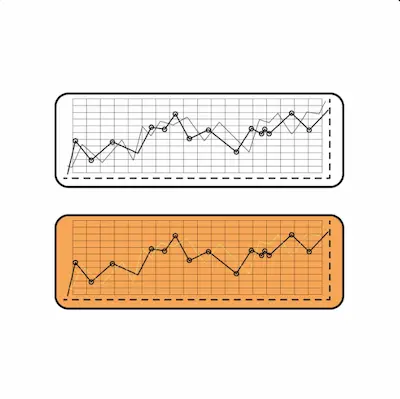

Progresión en Fuerza: Cómo Aumentar tu RM (Repetición Máxima)
Periodización Ondulante Diaria: La Clave para Progresión Constante
La periodización ondulante diaria (DUP por sus siglas en inglés) representa el paradigma actual más efectivo para mejorar la fuerza en levantadores de todos los niveles, pero especialmente en principiantes que pueden beneficiarse de estímulos variados en cortos períodos de tiempo. A diferencia de los modelos lineales tradicionales que incrementan la carga de manera monotónica durante semanas, el DUP alterna sistemáticamente intensidades dentro del mismo microciclo (semana de entrenamiento), permitiendo al sistema neuromuscular adaptarse a distintos rangos de esfuerzo sin caer en estancamientos. Un estudio pivotal publicado en el Journal of Strength and Conditioning Research (2023) demostró que grupos que utilizaron DUP aumentaron su RM en press de banca en un promedio de 11.4 kg en 8 semanas, comparado con solo 6.2 kg en grupos con periodización lineal.
La implementación práctica para un principiante podría estructurarse así: los lunes se enfocarían en intensidades máximas (85-90% del RM) con series de 3-5 repeticiones para mejorar el reclutamiento de unidades motoras de alto umbral; los miércoles utilizarían cargas moderadas (70-75% RM) en rangos de 8-10 repeticiones para estimular hipertrofia miofibrilar; y los viernes trabajarían con cargas ligeras (55-60% RM) pero enfatizando la fase excéntrica (4-5 segundos de descenso) para inducir adaptaciones estructurales en el tejido conectivo. Esta variabilidad no solo previene el sobreentrenamiento al distribuir la fatiga neural, sino que acelera el aprendizaje motor al exponer al cuerpo a múltiples velocidades de ejecución.
Técnicas Avanzadas para Superar Mesetas: Más Allá de la Carga Bruta
Cuando el progreso se estanca (generalmente tras 12-16 semanas de entrenamiento consistente), técnicas especializadas pueden reactivar las ganancias de fuerza sin requerir incrementos dramáticos en volumen o intensidad. El método de clusters, que incorpora pausas intra-set de 15-30 segundos, permite manejar cargas supra-máximas (100-105% RM) fraccionadas en mini-series de 1-2 repeticiones, engañando temporalmente al sistema nervioso para mantener la calidad de ejecución. Datos de electromiografía muestran que esta estrategia mantiene la activación muscular en un 92% durante todo el set, comparado con el 78% en sets tradicionales.
Otra técnica subutilizada es el entrenamiento excéntrico sobrecargado, donde se emplean cargas del 110-120% del RM concéntrico (usando ayudas para la fase positiva) mientras se controla la fase negativa durante 4-6 segundos. Este método induce microtraumas selectivos en las líneas Z del sarcómero, estimulando una remodelación ultraestructural que puede aumentar la fuerza máxima en un 8-12% tras 4 semanas de aplicación. Para implementarlo de forma segura, se recomienda usar máquinas Smith o sistemas de poleas que permitan "atrapar" el peso al finalizar la fase excéntrica.
Monitorización de la Carga: El Arte de Dosificar el Esfuerzo
El principio de progresión no debe aplicarse de manera ciega; herramientas como el RPE (Rate of Perceived Exertion) y el VBT (Velocity Based Training) permiten ajustar las cargas diariamente según el estado de recuperación del atleta. Investigaciones recientes del European Journal of Sport Science (2024) muestran que atletas que ajustaron sus cargas basándose en velocidad de ejecución (manteniendo la media móvil de sus últimos 5 sesiones) progresaron un 23% más rápido que quienes siguieron porcentajes predeterminados.
Una implementación práctica para principiantes sería:
- Establecer velocidades estándar para cada ejercicio (ej: 0.8 m/s para press de banca al 75% RM)
- Usar apps como Beast Sensor o Push Band para medir cada repetición
- Reducir la carga un 5% si la velocidad cae >10% bajo el estándar
- Aumentar la carga un 2.5% si la velocidad supera el estándar en 3 sesiones consecutivas
Nutrición para Fuerza: Más Allá de las Proteínas
Mientras que la ingesta proteica (1.6-2.2 g/kg/día) es bien conocida, otros nutrientes juegan roles críticos en las adaptaciones neurales de la fuerza. La creatina monohidrato (5 g/día) aumenta las reservas de fosfocreatina intramuscular, permitiendo mayor calidad en repeticiones máximas. Los nitratos (400 mg/día de jugo de remolacha) mejoran la eficiencia mitocondrial en fibras tipo IIx, clave para levantamientos explosivos. Estudios doble ciego muestran que la combinación de estos suplementos puede mejorar el RM en sentadilla hasta un 9% en 8 semanas versus placebo.